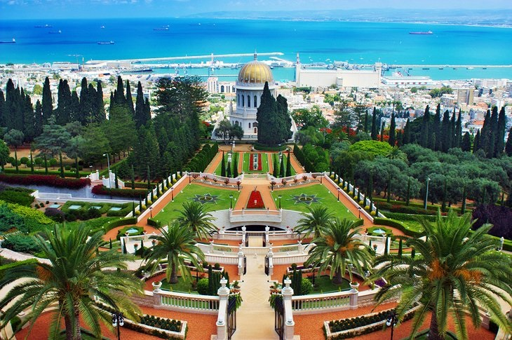
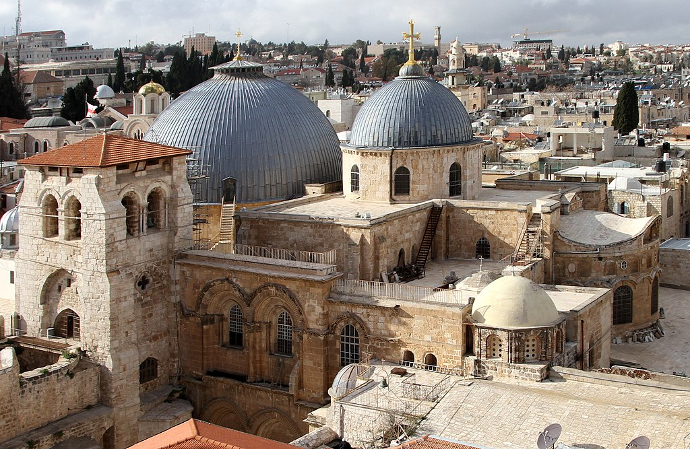

Haifa-Bahaii-garden
The Bahai World Center in Haifa, part of the Bahai Gardens but off-limits to tourists, is where the faith's international collective body makes its decisions, in the hands of nine elected leaders.
More..Church the Holy Sepulchre
The Church of the Holy Sepulchre is in the Old City of Jerusalem.According to traditions dating back to the 4th century, it contains the two holiest sites in Christianity: the site where Jesus was crucified, at a place known as Calvary or Golgotha, and Jesus's empty tomb, where he is believed by Christians to have been buried and resurrected
More..Dead Sea

The Dead Sea also known by other names, is a salt lake bordered by Jordan to the east and Israel and the West Bank to the west. It lies in the Jordan Rift Valley, and its main tributary is the Jordan River.
More..